Dog Stories is a cozy merge game. Merge items to help each dog's human, earn points, and unlock the next chapter of the story. The game shows this same tour the first time you play, and you can replay it any time from the title screen or Settings.
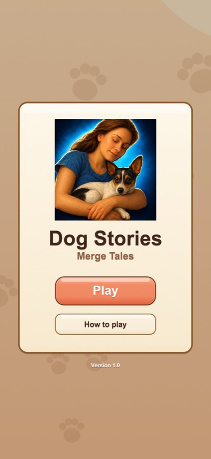
Tap Play to jump in, or How to play for a quick tour of the screen. The first time, Max's story opens and introduces your first request.
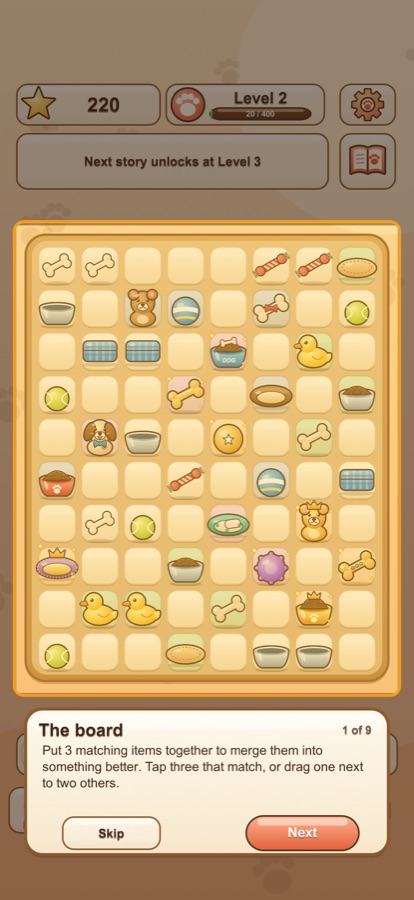
Put 3 matching items together and they merge into something better. Tap three that match, or drag one so it touches two others. Bigger groups merge too.
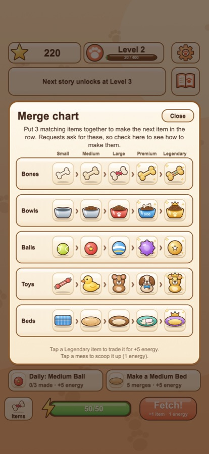
Not sure what merges into what? Tap Items at the bottom left. Each row is a family (bones, bowls, balls, toys and beds), going from Small to Medium, Large, Premium and Legendary. Finish Waffles' story at level 19 and bandages join them: Small, Medium and Large Bandage, then Gauze and the Dog Cone.
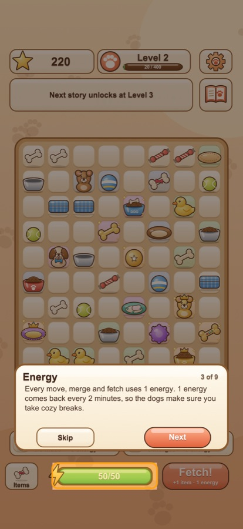
Every merge and fetch uses 1 energy, but moving items around the board is free. You have up to 50, and 1 comes back every 2 minutes, even while the game is closed.
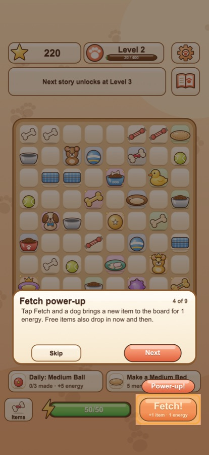
Tap Fetch! and a dog brings a new item to the board for 1 energy. Free items also drop in on their own every so often, a little faster as you level up.
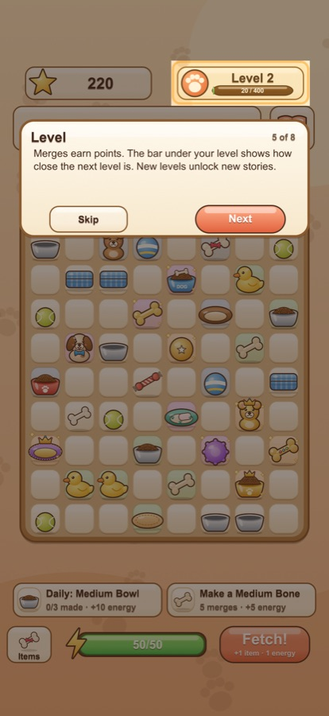
Merges earn points. The bar under your level shows how close the next level is, and new levels unlock new stories.
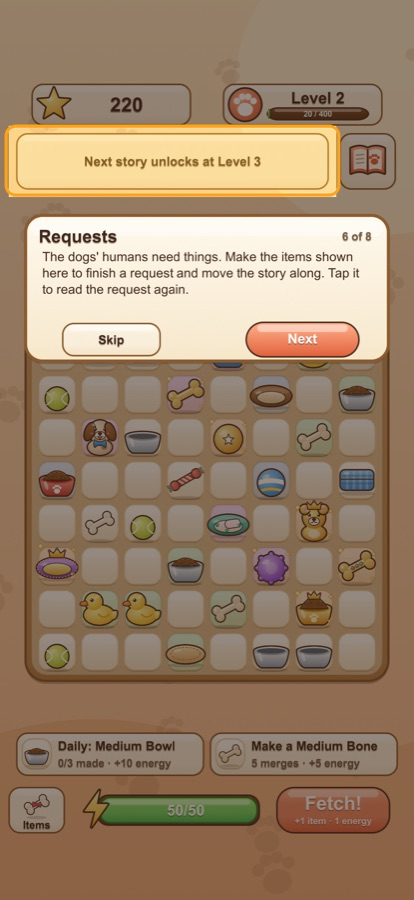
The banner at the top shows what a dog's human needs. Make those items to finish the request and move the story along. Finish quickly for +5 bonus energy. Tap the banner to read the request again.
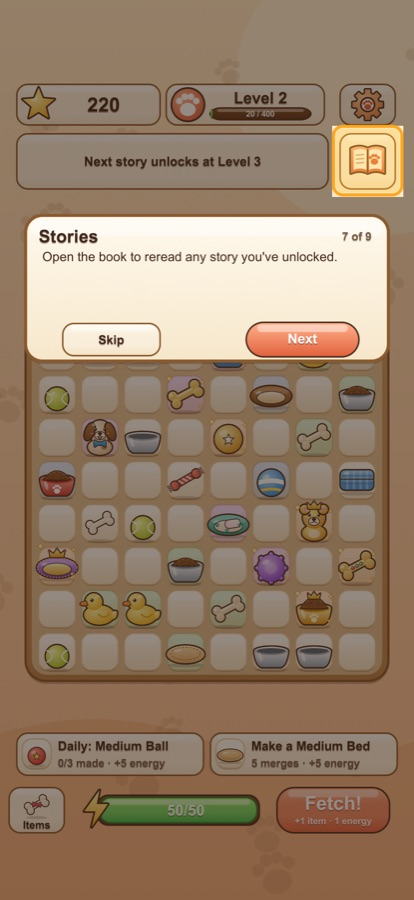
The book button opens the Stories book, where you can reread any chapter you've unlocked.
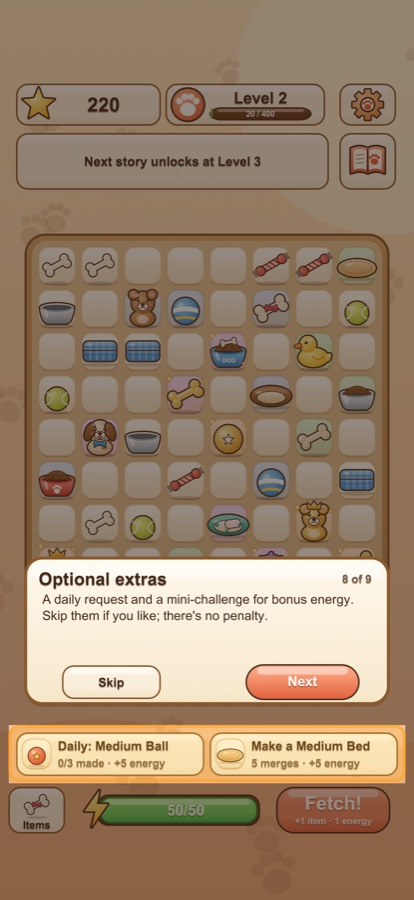
Below the board are a daily request and a mini-challenge for bonus energy (up to +5) and points. Tap either to see what it asks for. Skip them if you like; there's no penalty.
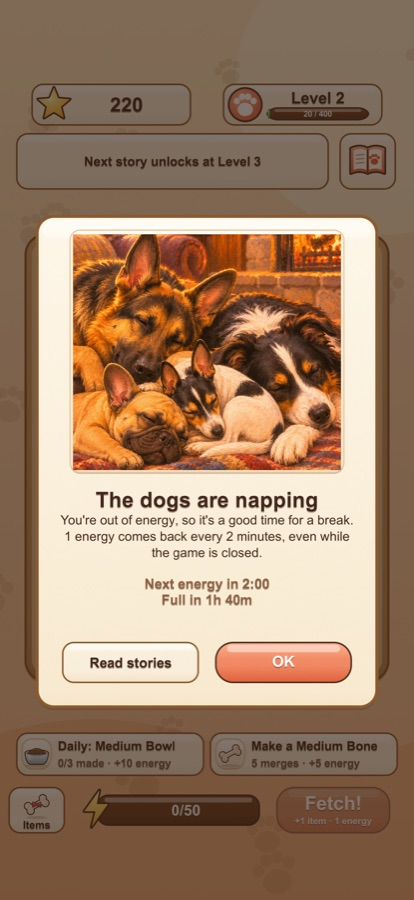
When your energy runs out, the dogs take a nap. The card shows when your next energy arrives and when you'll be full again. It's a good time for a break, or to reread a story.
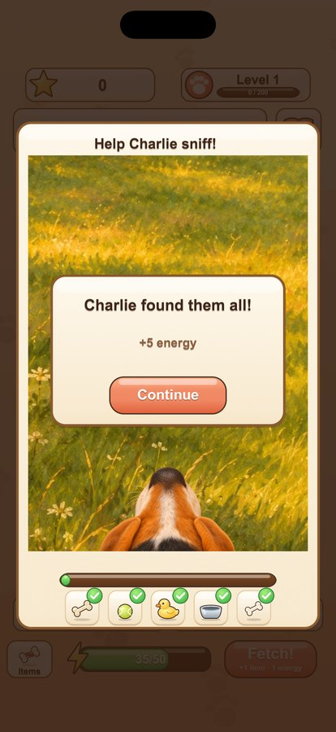
Some story chapters, starting with Charlie's "Training Day", offer a sniff game. Tap Help Charlie sniff!, or Skip to carry on reading. Drag the picture to move Charlie's nose around: the meter warms as you get close, and hidden treasures appear on his nose. Tap one to collect it. Each treasure gives 1 bonus energy the first time you find it, and you can tap Done whenever you like.
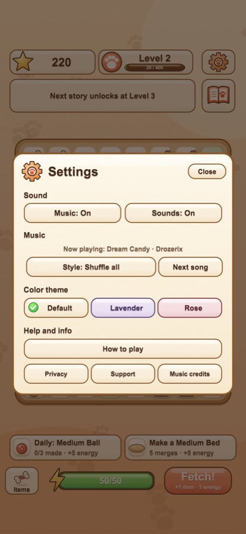
The gear button at the top right opens Settings. Turn Music and Sounds on or off, choose a music style or skip to the next song, and pick a color theme: Default, Lavender or Rose. Tap a theme and the whole game changes right away. How to play, the music credits, and the privacy and support links are in there too.
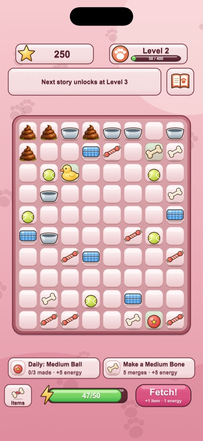
From level 2, a Fetch or a free item is sometimes a little mess instead. It can't be moved or merged, so tap it to clean it up with your pooper scooper and poop bag for 1 energy.
Made a Legendary item? It's the best of its family and doesn't merge any further. Tap it to trade it in for +5 energy and 500 points.
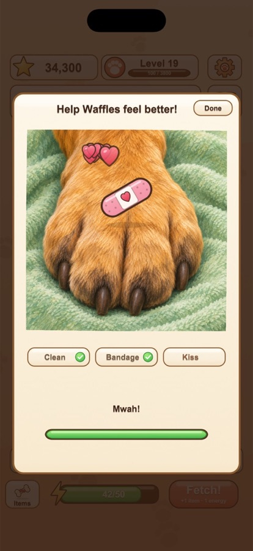
In Waffles' story, tap Help Waffles feel better!, or Skip to carry on reading. Rub the soft cloth over the paw, drag the bandage to the glowing spot and swipe to smooth it down, then press and hold the paw to give a kiss.
There's no timer and no way to get it wrong. Each step gives +1 energy the first time you finish it.
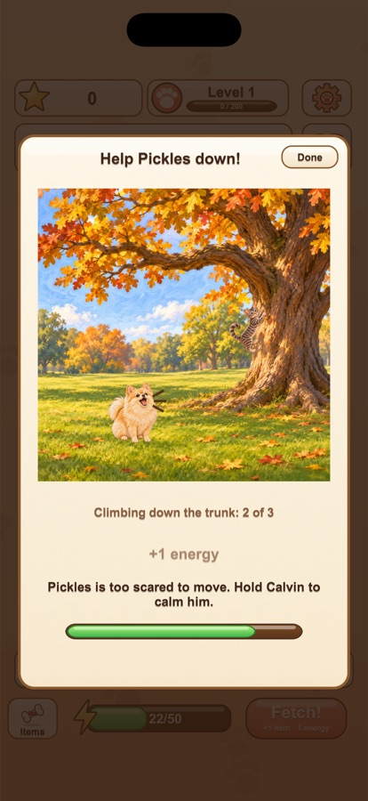
In Calvin's first chapter, tap Help Pickles down! Press and hold anywhere to keep Calvin calm, and Pickles climbs off the branch and down the oak's trunk, a little at a time. Let go and Calvin starts barking, so she waits. Near the bottom, tap Shake the treat bag! and she hops down to touch noses.
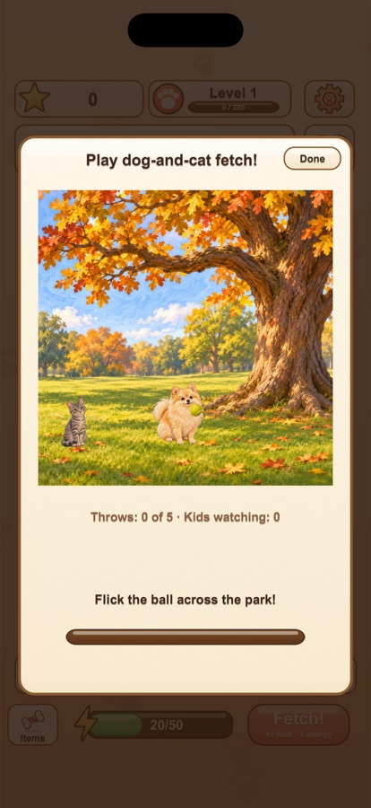
In Calvin's second chapter, flick the ball across the park. Calvin and Pickles take turns chasing it, and Calvin always carries it home. Five throws in all.
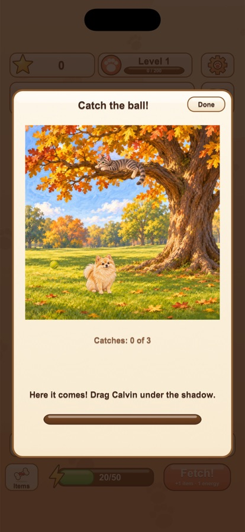
In Calvin's third chapter, Pickles knocks the ball out of the oak. Drag Calvin left or right under the shadow on the grass before it lands. Miss, and Pickles just knocks it down again. Three catches in all.
Each park game gives up to +5 energy the first time you play it, and none of them can be failed.
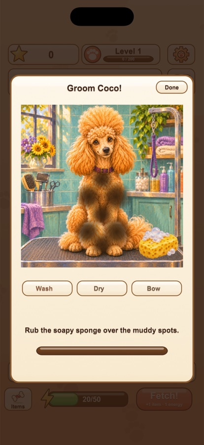
In Coco's first chapter, tap Groom Coco! after her puddle adventure. Rub the soapy sponge over each muddy spot until it's gone, move the dryer all over her until she fluffs up, then drag the pink bow onto the glowing spot on her topknot.
There's no timer and no way to get it wrong. Each step gives +1 energy the first time you finish it.